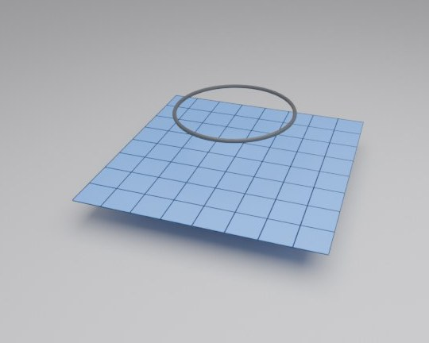
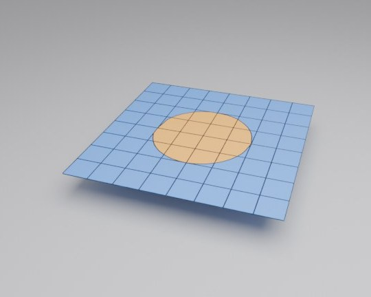

Bonus lesson
Knife Project
Knife Project is a tool that cuts into a mesh using the outline of another object, instead of a line you draw by hand. It works in Edit Mode. Find it under Mesh › Knife Project. The manual lists no shortcut key for it.


How it works
The manual explains that the outline of the selected objects that are not in Edit Mode is projected along the view axis onto the meshes that are in Edit Mode, and then cuts into the faces there. Afterwards, the geometry inside the cut is selected.
The cutting objects must be curves or non-manifold meshes, such as flat shapes or loose edges.
How to use it
- Select the objects to be cut and switch to Edit Mode.
- Select the cutting objects in the Outliner with Ctrl+click. If you have only one cutting object, you can Ctrl+click it in the viewport instead.
- Choose Mesh › Knife Project.
If Blender switches back to Object Mode when you select the cutting objects, the manual says to make sure Edit › Lock Object Modes is checked in the top bar.
Look from the right direction
Knife Project works from the current view. Rotate the view to exactly the position you need before you use it. Orthographic views such as Right, Front and Top are commonly used.
The option
- Cut Through projects the cut through the entire mesh, including back faces you cannot see.
The manual also notes a limit: when you cut several meshes in Edit Mode at once, the geometry of one mesh does not hide the separate mesh objects behind it.
Read the manual page on Knife Project.
Try it
This exercise is our own suggestion and has not been run step by step in the GUI. Add a Plane and subdivide it a few times. Add a Circle in Object Mode and move it above the plane. Look at the scene from the Top view. Select the plane and enter Edit Mode, then Ctrl+click the circle in the viewport and choose Mesh, then Knife Project. Use Ctrl+Z to undo.